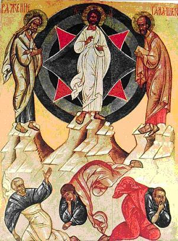

(2 Cor. 7:10-16; Mk. 2:18-22). At the Transfiguration the voice from heaven uttered nothing other than "Hear ye Him" (Mt. 17:5). Why so? Because here the fruit of obedience was set before their very eyes. The heavenly Father was saying, as it were: do you wish to attain to this? Then hear what He will teach and command you.
And if you go by His way, you will without doubt enter into that realm of light which will enfold you not from without, but will pour forth from within, and will always keep you in such a state that all your bones will cry out: it is good for us to be thus. You will be filled with the light of gladness, the light of a good disposition, the light of knowledge; all sorrows will pass away, the disorders of the passions will vanish, falsehood and delusion will be scattered.
You will become heavenly while yet on earth; from earth-born you will become God-born, from perishable, eternally blessed. Then all will be yours, because you yourselves will have become Christ's. He who loves Christ the Lord is loved by the heavenly Father, and They both come to him and make Their abode with him. Behold, this is the light of the Transfiguration!